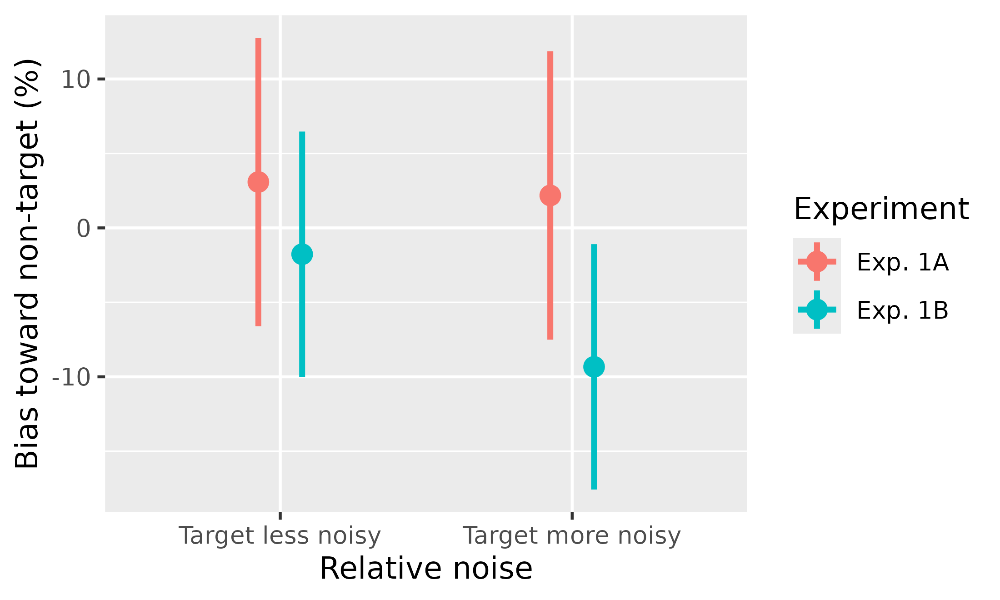

apastats2 provides helpers for formatting statistical
results in APA style. This vignette shows a minimal workflow using base
datasets and core functions.
Format test results
library(apastats2)
#> Loading required package: ggplot2
#> Loading required package: data.table
#>
#> Attaching package: 'data.table'
#> The following object is masked from 'package:base':
#>
#> %notin%
set.seed(1)
t_res <- t.test(rnorm(20, mean = 10, sd = 2))
t_str <- apa(t_res)
t_str
#> [1] "_t_(19.0) = 25.42, _p_ < .001"Inline rendering example: One-sample test result was t(19.0) = 25.42, p < .001.
data("sleep")
mt_str <- apa_mean_and_t(sleep$extra, sleep$group, which.mean = 3, paired = TRUE)
mt_str
#> [1] "_M_ = 0.75 [-0.18, 1.74] vs. _M_ = 2.33 [1.24, 3.54], _t_(9.0) = -4.06, _p_ = .003"Inline rendering example: Sleep increase comparison was M = 0.75 [-0.18, 1.74] vs. M = 2.33 [1.24, 3.54], t(9.0) = -4.06, p = .003.
set.seed(2)
x <- rnorm(40)
y <- 0.5 * x + rnorm(40, sd = 0.8)
cor_str <- apa(cor.test(x, y))
cor_str
#> [1] "_r_(38) = 0.41, _p_ = .009"Inline rendering example: Correlation result was r(38) = 0.41, p = .009.
tbl <- matrix(c(30, 20, 15, 35), nrow = 2, byrow = TRUE)
chi_str <- apa(chisq.test(tbl))
chi_str
#> [1] "$\\chi^2$(1, _N_ = 100) = 7.92, _p_ = .005, _V_ = .28"Inline rendering example: Chi-square result was \(\chi^2\)(1, N = 100) = 7.92, p = .005, V = .28.
Format model terms
You can format selected terms from linear or generalized models.
glm_res <- glm(Freq ~ (Age + Sex) * Survived, family = poisson, data = data.frame(Titanic))
glm_str <- apa(glm_res, term = "SexFemale:SurvivedYes", dtype = 3)
glm_str
#> [1] "_B_ = 2.32, _SE_ = 0.12, _Z_ = 19.38, _p_ < .001"Inline rendering example: GLM term result was B = 2.32, SE = 0.12, Z = 19.38, p < .001.
Adjusted confidence intervals
get_adjusted_ci() computes summary statistics and
interval columns for between-subject, within-subject, and mixed designs.
The within-subject Cousineau-Morey implementation is adapted from the
superb framework, but apastats2 implements it
internally and does not require superb.
data(memory_noise)
# Between-subject intervals: standard vs high-variability sample
target_higher <- memory_noise[
memory_noise$relative_noise == "target more noisy",
]
between_ci <- get_adjusted_ci(
target_higher,
value_var = "bias_percent",
between = "experiment",
wid = "participant"
)
between_ci[, c("experiment", "descr")]
#> experiment descr
#> 1 Exp. 1A _M_ = 2.18 [-8.82, 13.18]
#> 2 Exp. 1B _M_ = -9.33 [-19.11, 0.44]
# Within-subject Cousineau-Morey intervals
within_ci <- get_adjusted_ci(
memory_noise[memory_noise$experiment == "Exp. 1A", ],
value_var = "bias_percent",
within = "relative_noise",
wid = "participant"
)
within_ci[, c("relative_noise", "descr")]
#> relative_noise descr
#> 1 target less noisy _M_ = 3.08 [-6.60, 12.77]
#> 2 target more noisy _M_ = 2.18 [-7.51, 11.86]
# Mixed design
mixed_ci <- get_adjusted_ci(
memory_noise,
value_var = "bias_percent",
within = "relative_noise",
between = "experiment",
wid = "participant"
)
mixed_ci[, c("experiment", "relative_noise", "descr")]
#> experiment relative_noise descr
#> 1 Exp. 1A target less noisy _M_ = 3.08 [-6.60, 12.77]
#> 2 Exp. 1B target less noisy _M_ = -1.77 [-10.01, 6.47]
#> 3 Exp. 1A target more noisy _M_ = 2.18 [-7.51, 11.86]
#> 4 Exp. 1B target more noisy _M_ = -9.33 [-17.57, -1.09]Point-range plotting
plot_pointrange() can be used directly for quick
summaries.
plot_pointrange(
memory_noise,
aes(x = relative_noise, color = experiment, y = bias_percent),
wid = "participant",
within_subj = TRUE,
withinvars = "relative_noise",
betweenvars = "experiment",
connecting_line = TRUE
) +
labs(
x = "Relative noise",
y = "Bias toward non-target (%)",
color = "Experiment"
) +
scale_x_discrete(labels = c(
"target less noisy" = "Target less noisy",
"target more noisy" = "Target more noisy"
))
#> `geom_line()`: Each group consists of only one observation.
#> ℹ Do you need to adjust the group aesthetic?
Misc helpers
round_p(c(0.025, 0.0001, 0.568))
#> [1] "= .025" "< .001" "= .568"
mean_ci_str <- apa_mean_conf(c(1.1, 1.5, 0.9, 1.8, 1.2), bootCI = FALSE)
mean_ci_str
#> [1] "_M_ = 1.30 [0.86, 1.74]"Inline rendering example: Mean and CI summary was M = 1.30 [0.86, 1.74].
See individual help pages for full argument details and supported model classes.